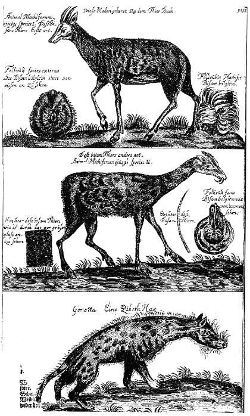

ŞEKİL 32. Johannes Schröder’in Vollständige und Nutzreiche Apotheke’sinden, çeşitli eczalarla ilişkili dörtayaklı hayvanlar: Yukarıda ve ortada geyik/karaca türü hayvanlar, altta ise misk kedisi (“Zibethum”).14
Ortaçağ Avrupa eczanelerinde bulunan egzotik (yabancıl) bitkiler arasında altınkökü ya da ipeka (“Cephalaelis ipecacuanha”), kınakına kabuğu, lobelya otu (frengi otu), güvercin ağacı yaprağı, guayak odunu (“Guajaco” / “demir odunu”) odunu, acıağaç odunu, sasafra odunu (“Sassafras officinale”), İspanyol biberi (“Capsicum annum”), Peru balsamı, vanilya, kakao, koka yaprağı, tütün, arapsakızı, ejderha kanı bitkisi (“Pterocarpus draco”), günlük ve başkaca pek çok ecza yer almaktaydı. Hintyağı müshil olarak, kâfur uyarıcı olarak, kılıçotu orta derecede bir depresyon giderici olarak, papatya ise iltihap önleyici olarak kullanılırdı.61
Avrupa eczanelerinde yerel ve egzotik hayvanların gizilgücünden de yararlanılmıştır: Kurt karaciğeri, tilki dili, horoz midesi, yer solucanı, tavşan tüyü, köpek pisliği, öküz safra taşı ve kavrulmuş kuyruk yağı yaygın kullanımlı ilaçlardı. Ayrıca deri, kıl, boynuz, diş, hayvansal yağ, hayvan pisliği ve kemikler de yerine göre kullanılmaktaydı. İspanyol sineği (kuduz böceği), afrodizyak olarak kullanılan zehirli “Cantharidin” maddesi içermekteydi. Sanal “tekboynuz” maddesine, her türden zehirlenmeye karşı antidot (panzehir) olarak sihirli güçler yakıştırılmıştı ve hastalar, söylence hayvanı tekboynuzun sahte boynuzlarına çok para ödemek zorunda kalmaktaydı. Günümüzde her şeyden önce parfüm bileşiminde yararlanılan çok sayıdaki hayvansal koku maddeleri (örneğin kunduz hayası yağı, amber, Zibet kedisinin, misk keçisinin ve misk geyiğinin miskleri) 19. yüzyıla kadar canlandırıcı, güçlendirici ve yatıştırıcı olarak, burundan koklayarak “kötü havayı süzmek” üzere çok sayıda preparatlarda yer almıştır.61
>Ülkemizde kanser ya da diğer kötücül hastalıklara yakalananların, uzun ömürlülüğün, sabrın ve yavaş hareketin simgesi bir hayvan olarak kaplumbağa kanını içerek şifa aradıkları bilinmektedir (hastalık seyrinin yavaş yürümesi dileği ile kaplumbağanın yavaş hareketi arasında kurulan bir benzeşim!). Böyle hastalar, otçul hayvan olan kaplumbağanın yalnızca şifalı otlarla beslendiğine ve bu bitkilerden aldığı şifayı, kanı yoluyla böyle hastalara aktardığına inanmaktadır. Halk arasında kurbağa ve kirpi de benzer bağlamda kullanılan diğer hayvanlardır.62
1572 yılında şair, tarihçi, botanikçi ve simyacı Jacques Gohory (1520-1576), doğa biliminde Paracelsus’un ardıllarından biri olup bir botanik bahçesi kurmuştu. Böyle bahçelerin kurulmasındaki amaç, ilaç yapımında kullanılmak üzere şifalı bitkiler yetiştirmekti. Ancak bitkilerden ilaç hazırlamak amacıyla böyle bahçelerin yanına farmasötik laboratuvarlar da inşa edildi. Gohory’nin ölümünden sonra bahçesi gerilemeye başlamışsa da o alanın, Montpellier modeline göre yeniden şekillendirilmesine karar verilmiştir. Montpellier’de eski bir tıp fakültesi vardı ve Fransa Kralı IV. Henri (1553-1610), 1593 yılında orada bir botanik bahçesi kurdurmuştu. 1626 yılında Kral XIII. Louis’nin (yön. 1610-1643) Jean Heroard (1551-1627) ve Guy de la Brosse (1586-1641) adlı iki özel hekimi “Jardin Royal des Plantes Medicinales”i kurdular. Bahçenin adından açıkça anlaşılacağı üzere, kuruluşu farmasötik amaçlı idi. Bahçe ilk başta Brosse tarafından 1635’e kadar yönetildi. Bahçenin ondan iki sonraki yöneticisi, büyük bilgin Buffon Kontu George-Louis Leclerc (1707-1788) oldu ve Buffon, “Jardin du Roi” (Kralın Bahçesi) adını verdiği bu bahçeyi 1739’dan 1778’e dek yaklaşık kırk yıl boyunca yönetti. “Jardin du Roi”ya, orada eğiterek eczacı yetiştirme görevi yüklendi. O dönemde eczacılık, eğitimi yapılan bir meslek idi. Her ne kadar farmasötik bilimi yüksekokul eğitiminde işleniyorsa da, bu yolu izlemek zorunda değildi. Eczacılar, “Jardin du Roi”da kurslara katılarak da yetiştirilebiliyordu. Bu nedenle “Jardin du Roi”da, bir yüksekokulunkine benzer düzenlemeye gidildi. Sonunda “garde et demonstrateur du cabinet du Roi” gibi çok özel görev nitelemeleri ortaya çıktı ve kısa zaman içinde de bu mevkilerde profesörler istihdam edilmeye başlandı. Burada “profesörlük” makamının konumu, “demonstratörlük” makamına göre daha yüksekteydi. Zamanla özel konferanslar vermek üzere konferansçılar da organizasyonda yerlerini aldı.3
Hekim Johann Jakop Wepfer (1620-1695), tasarlanan bir ilacın farmakolojik ya da toksikolojik etkileri konusunda, ilk olarak hayvan deneyleri yoluyla böylesi etkilerin doğrulanma ve kanıtlanma ilkesini ortaya atmıştır.
Kimyacı ve mineralog Martin Heinrich Klaproth’un (1743-1817) farmasötik uğraşları arasında, 1782 yılında “Neue Beiträge zur Natur- und Arzneiwissenschaft” (Doğa- ve Eczacılık Bilimine Yeni Katkılar) adlı dergide yayımlanan “Geschichte der Bestuscheffschen Nerventinktur“ (Bestuscheff Sinir Tentürünün Tarihi) başlıklı yazısından söz etmek gerekir. Bu gizemli maddeyi, Rus mareşali Kont Alexey Petrowitsch Bestuscheff (1686-1760), biri sarı, diğeri beyaz renkte olmak üzere iki çeşit halinde ve büyük miktarda üretmiştir. Daha sonra mareşalin bir yaveri, ilacın tentürünün (alkoldeki çözeltisinin) üretim gizini Fransız generali La Mott’a satmış, o da “General Mott’un Altın Damlası” adı altında ticarete sürmüştür. Bestuscheff ve Lamotte damlalarının inatçı hastalıkları giderme ya da frenleme konusundaki ünü, ayrıca da o zamanın kimyası açısından bu sarı damlaların güneş ışığında rengini atması ve gölgede yeniden eski sarı rengini alması şeklindeki yepyeni görüngüsü, kısa zamanda hekim, fizikçi ve kimyacıların dikkatlerini üzerlerine çekmiştir. Bu tentürlerin bileşimlerini bulmak üzere analize yönelinmişse de başarılı olunamamıştır. Söylendiğine göre 1731 yılında Kral XV. Louis (yön. 1715-1774), 20 şişe “Lamotte Damlası”nı, bir süvari birliği aracılığıyla, gut (damla, nikris) hastalığı nedeniyle ayaklarından rahatsız olan Roma’daki papaya gönderdi. Fransa’da, bu gizemli tentürün içinde altın bulunduğu söyleniyordu. Açıkgöz kimyacılar “altın damlasının” gizini analizler yoluyla çözdüklerinde, sarı tentürün, fazlaca alkol içinde demir ve tuz asitinin seyreltik çözeltisi olduğunu, beyaz tentürün ise alkol dışında “tatlı bir asitin” zayıf bir çözeltisini içerdiğini anladılar. Klaproth bu konuda pek çok deneme yapmış, tuz asiti içindeki derişik çözeltilerinden demiri eterle özütlemiş (ekstrakte etmiş) ve eterli çözeltiyi alkolle karıştırarak sarı tentürü hazırlayabilmiştir.63
Johann Wolfgang von Goethe’nin (1749-1832) yaşadığı çağın en saygın Alman eczacılarından biri Johann Bartholomäus Trommsdorff (1770-1837) idi. Trommsdorff, 1793 yılında temelini attığı “Journal de Pharmacie für Aerzte und Apotheker“ adlı dergi yoluyla doğa bilimsel eczacılık eğitimini yazınsal olarak geliştirmeyi ve eczacılığın düzeyini uygulama alanında iyileştirmeyi denemiştir. Erfurt’ta 1795’te bir okul kurmuş, burada öğrencilerine yalnızca el yeteneği öğretmeyip ayrıca doğa bilimi eğitimi de vermiştir.47 “Kimya laboratuvarlarının babası” diye nitelenen Justus von Liebig (1803-1873), 1831’den itibaren Philipp Lorenz Geiger’in (1785-1836) “Magazin für Pharmazie” adlı dergisinde, yabancıların incelemeleri üzerine alışılmadık keskinlikte eleştiriler yazmıştır. Bu dergiden yola çıkarak Liebig, “Annalen der Chemie und Pharmacie“ adlı dünyaca ünlü derginin 1832 yılından itibaren yayımcılarından biri olmuş ve bu dergi, yarım yüzyıl boyu dünyanın en önemli kimya ve eczacılık dergisi olmuştur.
İlginç bir nokta, Osmanlı Devleti’nin de baharat ithalatçısı olmasına ve bu malın dünya ticaretini elinde tutan Hollanda’nın hem Osmanlı’ya hem de Avrupa’ya baharat satmasına karşın, ortalama Fransız vatandaşının gözünde bu zenginliğin kaynağının Türkiye olarak görülmesinin devam etmesidir. Baharatın en yaygın kullanım alanı ilaç yapımıydı. 18. yüzyılda bilimsel tıp, henüz emekleme aşamasındaydı. Osmanlı ülkesinde “Yunanî tıb” diye anılan ve uygulanan Eski Yunan tıbbı Avrupa’da da henüz geçerliliğini korumaktaydı. Eski Yunan’a büyük bir hayranlık duyan Fransızlar, eski tıp bilgilerinin mirasçısı olarak, şimdi o toprakların sahibi olan Türkleri görmekteydiler. Bu konudaki düşünceleri o kadar köklüydü ki, Fransa’da eczacıların ilaçlarına koydukları ve köken belirleyen etiketlerin içinde, eğer ilacın hammaddesinin Türkiye kökenli olduğu belirtilmişse, bu onun tedavi edici niteliğinin yeterli güvencesi sayılmaktaydı.59
Batı’da kullanılan Doğu kökenli ürünler, nispeten ender minerallerle hayvansal ve bitkisel hammaddelerin zengin bir grubu idi. Rönesans döneminin müstahzar, kullanım yeri ve kullanım biçimlerini ele alan bilimsel kitaplarında yer alan Doğu kökenli yaygın maddeler şunlardı:59
Mineraller: Şap, boraks, zincifre, kireç, bitüm, kükürt, kilermeni ya da Ermeni bolusu (“bolus rubra / bolus ermenes / bolus armenicus / bolus Armeniae”), antimon, inci ve değerli taşlar (bunlar öğütülerek kimi ilaçlarda kullanılmaktaydı). Bunlardan Ermeni bolusu, demir oksit içeriği nedeniyle, “Terra sigillata”ya benzer şekilde boya maddesi (aşıboyası) olarak ve merhem ya da yakı şeklinde şifa aracı olarak kullanılırdı.
Hayvansal ürünler: Misk (Lat. “muscus”), balmumu, esmer/gri amber, deniz kabukları, kırmız böceği (boya için), mercan, maroken (deri);
Bitkisel ürünler: Çeşitli reçine ve sakızlar, kitre, karabiber, zencefil, hindistancevizi, safran, tarçın, karanfil, kına, kâfur, arap reçinesi (arapsakızı), sandal ağacı, günlük, şeyhhorasani, sinameki, çayır mantarı, kimyon, havacıva, ravent, sarısabır (“aloe”) odunu; indigo, mazı, safrancık, kızılkök gibi boya maddeleri; kahve, pirinç, hurma, kuru meyveler gibi gıda maddeleri ve müstahzarat.
Avrupa’da eczacıların çeşitli tıbbî maddeleri saklamak üzere kullandıkları kaplardan, ilk olarak fayans ve seramikler akla gelmektedir ve kökensel olarak İran kaynaklıdır. 14. yüzyılda İspanya’da bunun ilk Avrupa örnekleri görülmektedir (ŞEKİL 33). Mayorka (Mallorca) Adası üzerinden “hispano-mauresque” (İspanyol-Morisko) fayans kaplar Orta İtalya’ya satılmış ve orada özellikle Faenza kentinde kopyaları yapılmıştır (“fayans” sözcüğü, “Faenza” kentinin adından gelmektedir). Araplardan kazanılan çömlekçilik bilgisi, evsel ve ticarî mal üretimi bağlamında Faenza’dan ilkin Palermo ve Venedik’e, daha sonra da Lyon ve Anvers’e (Antwerpen) yayılmıştır.47, 64